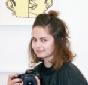
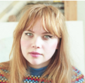
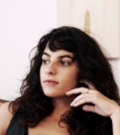
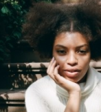

Longevial is an art director and illustrator based in Paris, whose beautiful paintings of intertwined bodies are likely to have you looking twice. She breaks up the human figure into segments in a fashion Picasso himself would admire, rendering different parts in contrasting but muted colour palettes to disguise the physicality of her subjects.

Marleigh Culver
Marleigh Culver is a burgeoning artist and graphic designer, originally from Virginia, now based in Brooklyn, NY. Her work encompasses both paint and digital mediums and is characterized by an abstract and romantic aesthetic, often focused on plants as subject matter. The use of color throughout her work is both considered and playful, reflecting the artist’s own effervescent personality.

Malin G. Nordin
For Malin Gabriella Nordin, the experience of creating is like unveiling the evolution of a new world. The sensation, aura and mood of her works are inspired by an acute intuition and awareness of the power of imagination. She is driven to explore possibility and experience her artwork as it appears in dreams. A champion of collage since she was a child, Nordin has been creating with such intuition throughout her life.

Nico Mazza
I’m a hair-twirler, thumb-twiddler, knuckle-cracker, and avid embroideress. My fingers are constantly moving over some surface – twisting, pulling, scraping, poking. I would call them nimble. I choose art because my fingers would harden to rock if they weren’t constantly lubricated by joint fluid. For me, art is meditation. It is timeless, limitless, and lawless. I enjoy the way tiny acts accumulate into a giant experience.

Elise R. Peterson
Elise R. Peterson is a writer, visual artist and educator living and working in New York. Writing clips have appeared in Adult, PAPER MAGAZINE, ELLE, LENNY LETTER, and NERVE among others.
She previously served as the founding Music Editor of Saint Heron.
Her written work doubles as storytelling and investigating the nuance of identity and sexuality as it relates to marginalized communities.
Alice Quaresma
Alice Quaresma was born in Brazil in 1985 and she currently lives in New York. Alice has in her curriculum a number of awards, special projects invitations and residency programs, including the renowned Foam Talent Prize in Amsterdam. Alice already had her work published in major magazines, newspapers and websites in Brazil, Japan, US and Europe.